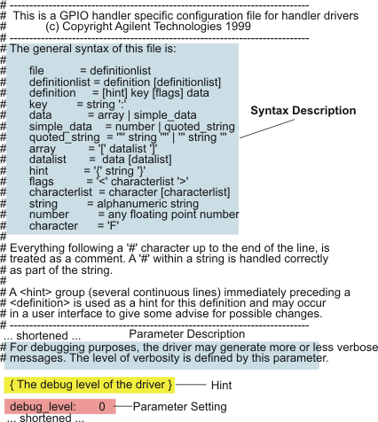

Syntax of the Driver Configuration File
This appendix describes how to edit a driver configuration file with a text editor. However, the recommended way is to use the designated configuration editor, as described in Editing a Driver Configuration File.
Everybody who has write access to a configuration file can edit that file with a text editor. Access permissions therefore must be set according to the data access policy and responsibilities on the production testfloor.
When you set up a new specific driver configuration file, you should always use the provided default driver configuration, which applies (best) to the equipment type you use, as a template.
See Appendix A: Plug-In and Default Configuration Files for the locations of all default configuration files.
In addition to the parameter settings, a default configuration file contains a syntax description for the contents of the file, a short description of each parameter in the file, and hints.
A hint is a very short description (typically one line) of a configuration parameter that will be displayed by the editor for driver specific configurations.
The following excerpt of a default configuration file shows the syntax description and an example parameter with description and hint.
